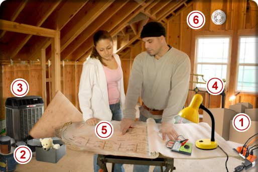

HomeHero At Hand for Peace of Mind™
My Home Safety
The Attic
As families expand out, they often expand up as well. Your attic can serve a multitude of purposes. From the traditional household storage area to a convenient place for the central heating system; and with a full remodel, additional living space for the expanding family and kids.
- Storage
- Flammable materials
- Heating system
- Burnable stored materials
- Electrical circuits
- Smoke and carbon monoxide detectors
- Have you considered...
- When using the attic for storage, be careful about what you store there as well as how you store items.
- Attics tend to be one of the warmer places in our home and therefore not a good place to store combustible, like paint or solvents.
- If all or part of your home heating system is located in your attic,
be sure not to store anything too close to this equipment such as burnable or flammable materials and check regularly for filter replacement. - Clutter easily overtakes storage areas, so the occasional clean-out to reduce the buildup of burnable stored materials will help reduce the risk of fire.
- When we begin a remodeling project, we often forget some of the precautions we normally practice. Be sure not to overload electrical circuits and make sure you hire a professional electrician to insure the job is done properly and to code.
- Use smoke and carbon monoxide detectors throughout your home and test and vacuum them regularly to ensure proper protection.
- Storage
- Flammable materials
- Heating system
- Burnable stored materials
- Electrical circuits
- Smoke and carbon monoxide detectors
